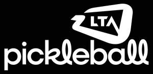
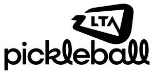
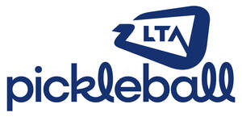

Trade Mark Journal No.2025/033 15 August 2025
UK00004234946 16 July 2025 (36,41)
Mark 1

Mark 2

Mark 3

Mark 4
Mark 5
Mark 6
- Class 36
- Financial sponsorship; funding services; charitable fund raising; charitable collections; issuing of tokens of value in relation to incentive schemes; providing project grants for sport and health awareness projects; issuing of vouchers; financial grant services; providing project grants for sports and health awareness projects; granting of loans; providing financial grants; providing financial grants and funds sponsorship in the field of sports and racket sports; providing grants and financial awards in the field of sports and racket sports for charitable purposes.
- Class 41
- Entertainment; sporting and cultural activities; provision of recreational facilities; sports entertainment services; sports club services; organisation, arrangement and conducting of sporting competitions and sports events; entertainment services provided by on-line streams; live entertainment services; sporting education services; sports coaching; sports tuition, coaching and instruction; providing on-line electronic publication [not downloadable]; coaching; sports camp services; sports club services; physical fitness tuition and instruction; physical education services; provision of courses of instruction in coaching, player development and child protection and welfare; providing courses of instruction in self-awareness; rental of sports equipment; organisation, arrangement and conducting of racket sport competitions and racket sport events; organisation, arrangement and conducting of racket sport games; racket sport academy services; racket sport education services; racket sport tuition, coaching, mentoring and instruction; providing racket sport training facilities; providing information on-line relating to racket sports; providing information on-line relating to sport; officiating at racket sport contests; arranging and conducting seminars, conferences and exhibitions relating to racket sports; organising and conducting volunteer programs and community activity projects; organising and conducting volunteer programs and community activity projects relating to sports and racket sports.
LTA Operations Limited
Representative: Boult Wade Tennant LLP